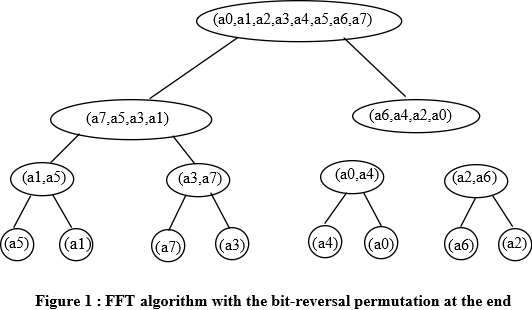

To implement an Iterative-FFT algorithm computes DFT. Look at figure 1.
Steps to implementthe Iterative-FFT algorithm:
In the above given vector, n=8. Values are : (0,2,3,-1,4,5,7,9)
(k) 10 (k) 2 (r 8 (k)) 2 (r 8 (k)) 10
0 0000 0000 0 = 0 * 24
2 0010 0100 4 = 1 * 22
3 0011 1100 12 = 3 * 22
-1 1001 1100 -4 = -1 * 22
4 0100 0010 2 = 2 * 20
5 0101 1010 10 = 5 * 21
7 0111 1110 14 = 7 * 21
9 1001 1001 9 = 9 * 20
Table 1 : Factorization of given vector (0,2,3,-1,4,5,7,9)
To implement an FFT algorithm with the bit-reversal permutation occurring ath the end takes 8 steps. Look at figure 1.
Algorithm to implementthe bit-reversal permutation occurring at the end:
Iterative-FFT(a)
1. Bit-Reverse -Copy(a, A)
2. n = a.length //n is a power of 2
3. for s= lg n to 1 //for bit-reversal permutation occurring at the end
4. m=2s
5. ωm = 2xi/m
6. for k= 0 to n-1 by m
7. ω = 1
8. for j=0 to m/2-1
9. t = ω A[k + j + m/2]
10. u = A[k + j]
11. A[k + j] = u + t
12. A[k + j + m/2] = u - t
13. ω = ω ωm
14. Return A
Call the function Bit-Reverse-Copy and its algorithm is given as :
1. Bit-Reverse -Copy(a, A)
2. n = a.length //n is a power of 2
3. for k = 0 to n-1
4. A[rev (k)] = ak
The twiddle factors computed by the ITERATIVE-FFT will depend on the innermost for loop.
The number of iterations of the for loop that is from k=0 to n-1 by m are n/m. For each m/2 iterations, that are computed by running the for loop from j=0 to m/2-1 the number of twiddle factors are: .
If the twiddle factors are computed before then there will be no requirement of any computation.
The number of twiddle factors that will show up are n/2 so those computed by us are m/2=
Butterfly Operations
A butterfly operation is used with the context of the fast Fourier transform which perform the computation by producing the larger DFT (that is the Discrete Fourier Transform) by the combination of the smaller DFTs. It is called so as its DFD (data flow diagram) has the shape of butterfly in the case of radix-2.
It is mostly used in the case of the algorithm called as Cooley–Tukey FFT algorithm, in this algorithm the DFD is breakdown recursively into the size into the r smaller transform of the size c and where r is the radix of the transform.
And in the next step the smaller DFDs are combined with the help of r butterflies which are of size r (which operations are performed c times) which are multiplied by the root of unity termed as twiddle factor.
The butterfly circuit of a fast Fourier-Transform comprises of various stages:
1. There is a memory stage where output of the butterfly-operation is received and the input is supplied.
2. There is a block for floating point computation which receives the input of the butterfly-operation from the stage operation and where the various operation sequences such as addition and multiplication are performed.
3. There is a forwarding circuit.
a. The multiplier output signal is received and the input signals adder is applied for at least one adder.
b. The multiplier output signal is received using at least one adder to the input port of the second adder.The recursive procedure of FFT, in the form of tree is shown below:
The leaf nodes given in the tree given above will specify inputs of FFT in parallel. The root node has all the inputs and they are divided in such a manner that consecutive inputs enter into left child and right child.
The representation of the FFT in parallel form is given below:

In the figure given above, the outputs of the adders at stage 1 become the inputs of the adders at stage 2. In FFT adders, all the outputs of adders at previous stage become inputs of current adder and twiddle factor is also there.
In order to identify a failed adder in the circuit which always produces a zero output, the circuit has been checked in order of decreasing stages. For two inputs x and y, with a twiddle factor of t, the outputs provided by an adder are and. As the changes made by twiddle factor is very low, outputs can be observed by removing twiddle factor.
For an input of 1, 1, 1, 1, 0, 0, 0 and 0, the outputs provided by adders at stage 1 are 1, 1, 1, 1, 1, 1, 1 and 1. At stage 2, the outputs become 1, 0, 1, 0, 1, 0, 1 and 0. So, at stage 1, every adder provides output of 1 from every wire and at stage 2 it provides output of 1 and 0. Here, corresponding outputs are considered which are 1, 0, 1, 0, 0, 0, 0and 0.
Consider the adders from top to bottom and then left to right as adder 1, adder 2, and adder 3 ……… adder 12. The fault adder found easily by looking at obtained outputs. For this, variation in inputs are made so that the output provided by any wire of the adder is 1, it s because the fault adder make output of 0 in both cases. A table that showing change in output and on the basis of them identification of fault adder is given below:
|
Change in output wires |
Fault adder |
|
y 0 and y1 |
Adder 1 |
|
y 2 and y3 |
Adder 2 |
|
y 4 and y5 |
Adder 3 |
|
y 6 and y7 |
Adder 4 |
|
y 0 and y2 |
Adder 5 |
|
y 1 and y3 |
Adder 6 |
|
y 4 and y6 |
Adder 7 |
|
y 5 and y7 |
Adder 8 |
|
y 0 and y4 |
Adder 9 |
|
y 1 and y5 |
Adder 10 |
|
y 2 and y6 |
Adder 11 |
|
y 3 and y7 |
Adder 12 |
The method that has been followed above is an efficient method because on the basis of the outputs the default adder can be detected. As the approach used here starts from the output, this makes the approach more efficient. It is because the user is always concerns with the output provided by the adder.